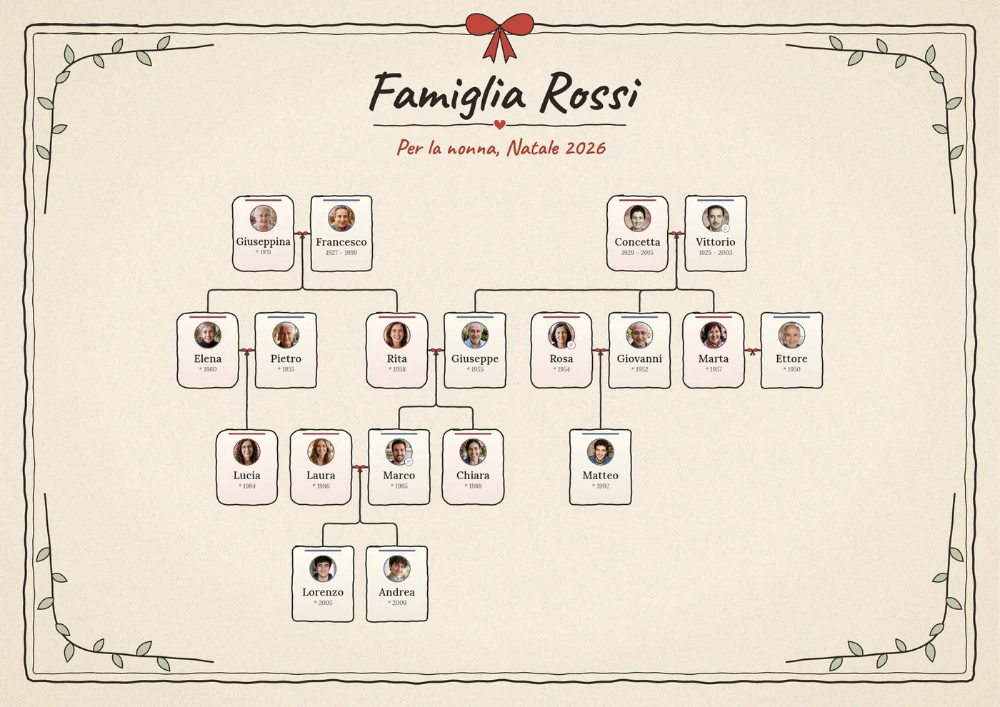
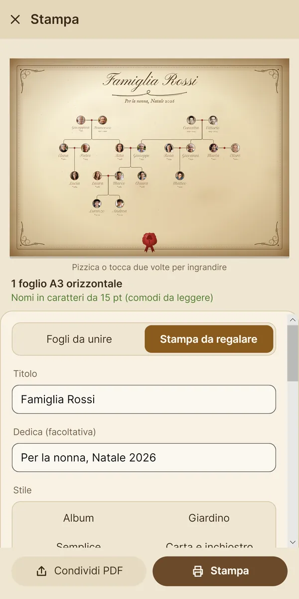

Un albero genealogico come regalo di Natale
Pochi regali emozionano i nonni come vedere tutta la loro famiglia insieme, con le foto, in un quadro. E non serve essere esperti di genealogia: con il telefono e un paio di serate è fatto.

Idee regalo
Una stampa incorniciata per i nonni
Il classico: l'albero dai bisnonni fino ai nipoti, con la foto di ognuno, un titolo e una dedica. In una cornice 30×40 sta bene su una mensola; in 50×70 diventa il protagonista del salotto.
Il PDF per tutta la famiglia
Il giorno di Natale manda il PDF nel gruppo di famiglia. Tutti possono aprirlo sul telefono e ingrandirlo per leggere ogni nome, e i cugini scoprono finalmente come si chiamavano i bisnonni.
Un albero da completare insieme
Inizia con quello che sai e manda l'albero a zii e cugini: ognuno completa il suo ramo con Ramo, gratis per loro, e te lo rimanda. Ramo unisce le versioni senza duplicare nessuno. La stampa finale è un regalo fatto da tutta la famiglia.
Per un neonato
L'albero di un bimbo con genitori, nonni e bisnonni è un ricordo per tutta la vita, e un bel regalo per i neo-genitori.
Passo passo, in tempo per Natale
- Tre settimane prima: raccogli nomi, date e foto. Chiedi a genitori e zii (con discrezione, se è una sorpresa) e fotografa con il telefono le vecchie foto dell'album. Se non sai una data esatta, segnala la data come approssimativa.
- Due settimane prima: crea l'albero. Inizia da te o dai nonni e aggiungi genitori, partner e figli toccando le schede. Ramo dispone tutto da solo.
- Dieci giorni prima: prepara la stampa. In Stampa scegli Stampa da regalare, il formato della cornice, lo stile, il titolo e la dedica. Controlla che i nomi si leggano (ecco come).
- Una settimana prima: stampala. Porta il PDF in copisteria su carta opaca e cerca una cornice di quel formato. A dicembre i siti di stampa sono più lenti: non ridurti all'ultimo giorno.

Quale stile scegliere
- Pergamena: carta invecchiata, calligrafia e sigillo di ceralacca. Il più tradizionale.
- Carta e inchiostro: un disegno a china con un fiocco rosso, molto natalizio.
- Giardino e Album: più semplici e luminosi, per case moderne.
Puoi cambiare stile tutte le volte che vuoi e vedere subito il risultato.
Se hai poco tempo
Stampa l'albero in A4 o A3 a casa o nella copisteria sotto casa: Ramo lo adatta al foglio e ti dice quanto saranno grandi i nomi. E se proprio non arrivi, anche il PDF sul telefono di ognuno è un regalo.
Le stampe da regalare fanno parte di Ramo completo, un solo pagamento e senza abbonamento. Creare l'albero, condividerlo in PDF e stamparlo su fogli è gratis.
Altre guide